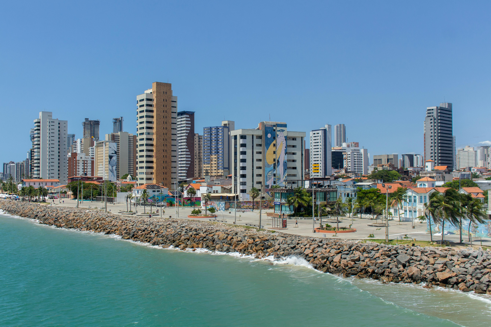

Municípios analisados
Dois territórios, dois perfis distintos.

Município I
Fortaleza
Ver painel →
13 bairros acompanhados nos territórios Grande Bom Jardim e Grande Mucuripe. Recorte de cerca de 345 mil habitantes em dois perfis muito distintos.
2Territórios
13Bairros
345kHabitantes
 Município II
Município II
Maracanaú
Ver painel →
44 bairros agrupados em seis regiões administrativas, com cerca de 239 mil habitantes. Núcleo urbano consolidado e bordas com vulnerabilidade aguda.
6Regiões
44Bairros
239kHabitantes